Products first in search
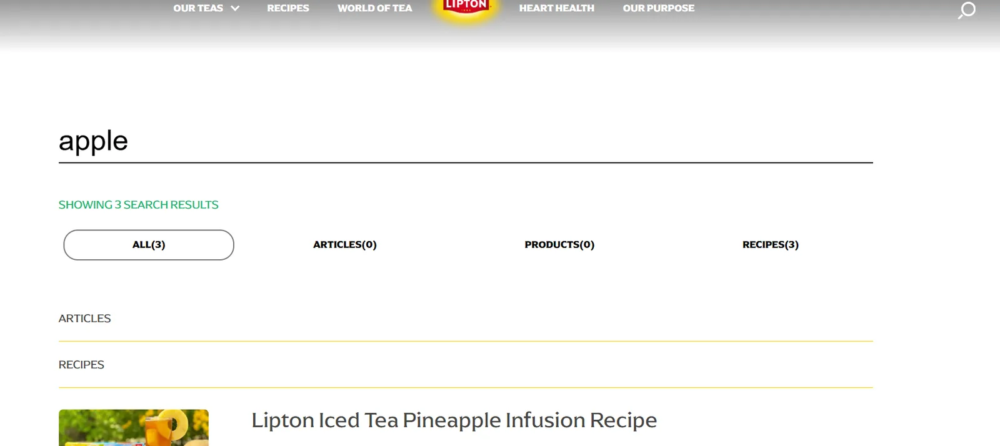
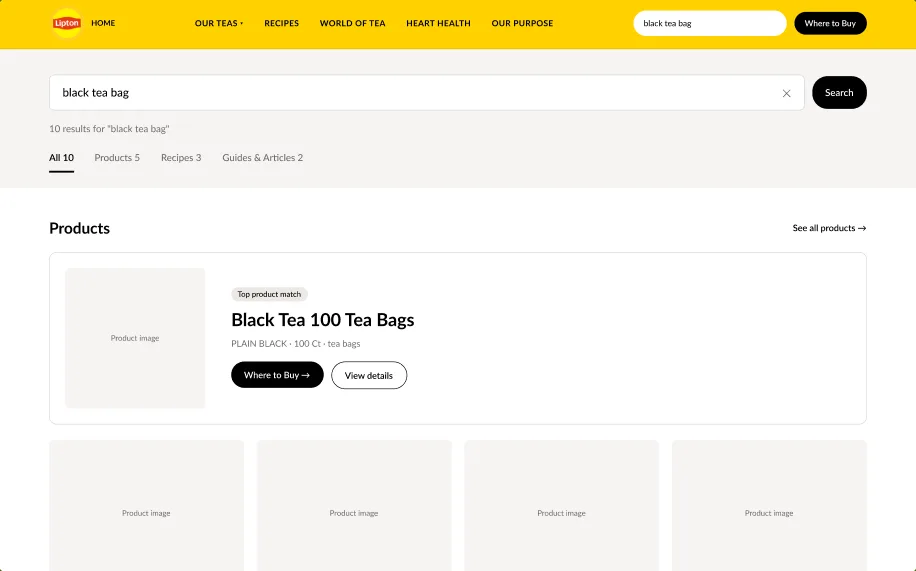
Information scent: clear labels help people predict where a link leads (Johnson, 2021).
Redesigning the Lipton website so people can find a tea, learn how to use it, and see where to buy it.
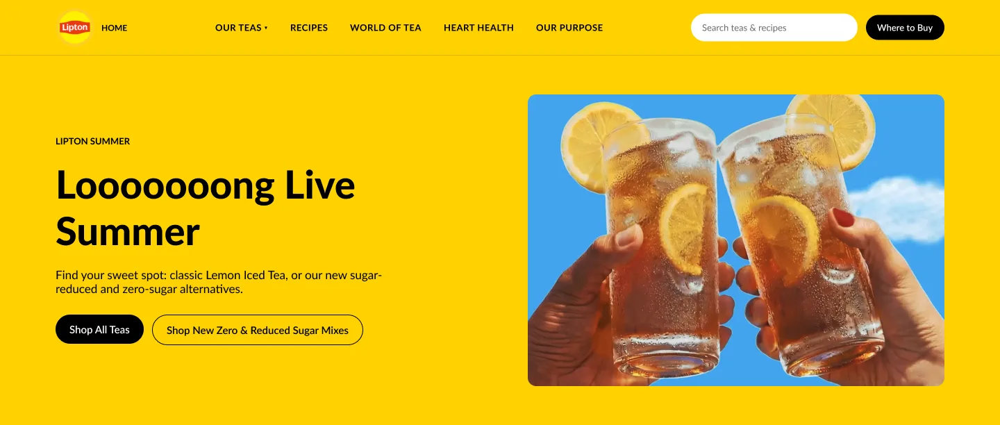
Lipton's products are everywhere in supermarkets, but the website feels quite simple and has a lot of room for improvement.
My research question: How easily can users discover Lipton products, understand how they can be used, and find where to buy them?
Every test used the same scenario: "You've run out of black tea bags and want to buy some more as soon as possible for your daily morning and lunchtime tea. You're also curious about what other options might be worth trying besides your usual choice."
This was a solo project. I planned and ran the tests, analysed the data, redesigned the site, built the prototype and tested it again with new participants.
expected to buy products on the homepage.
confidence. Most clicks went to "Our Teas".
found how to prepare tea. Finding a green-tea cold drink: 67% success, 25% direct.
average SUS score, below the 68 benchmark. One participant did not finish.
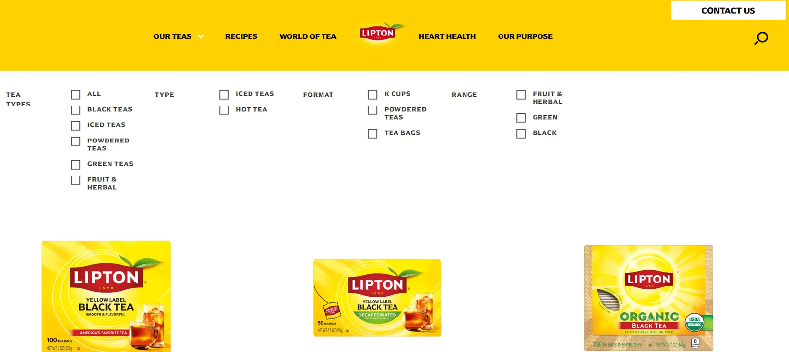
Original website, moderated usability test.
Redesigned prototype, three new participants. Participant 1 found the Where to Buy button but did not click it.
At first I thought the homepage visuals were distracting people. The tests showed that most participants understood what the site was for. They got stuck on how it was organised.
Two participants clicked the same "Shop Now" and landed on different pages. One ended up on powdered mixes and opened Where to Buy for the wrong product.
Searching for a product returned recipes first. "Apple" returned 3 recipes and 0 products.
Tea type, temperature and content type were mixed together, so people found recipes, but rarely on the first try.
Preparation guides sat under "How To's & Hacks" next to party ideas and travel stories. Only 3 of 12 found them.
You couldn't browse recipes by the tea you already had, and related recipes were easy to scroll past.
I kept Lipton's colours and the parts that already worked, and changed the structure and navigation.


Information scent: clear labels help people predict where a link leads (Johnson, 2021).
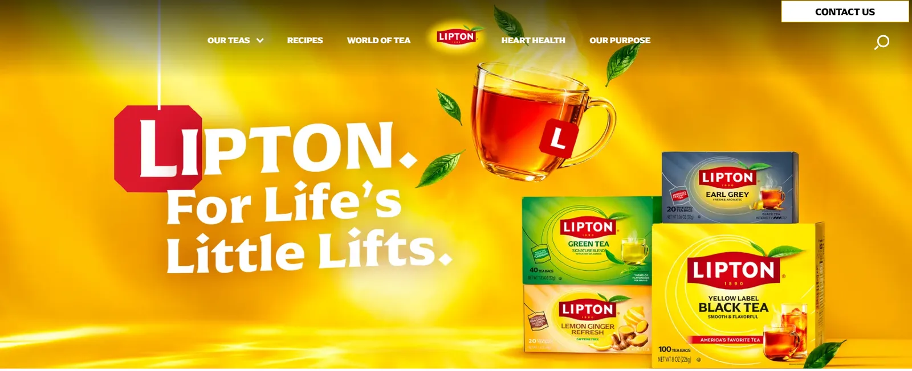
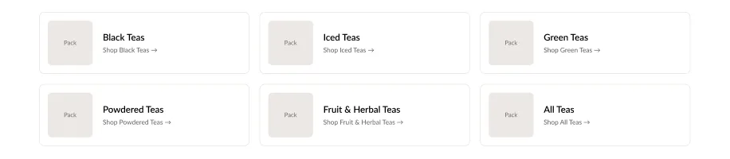
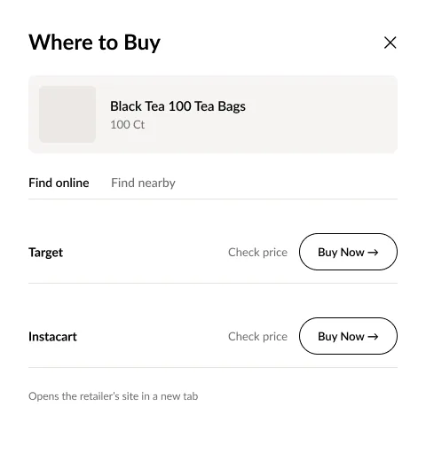
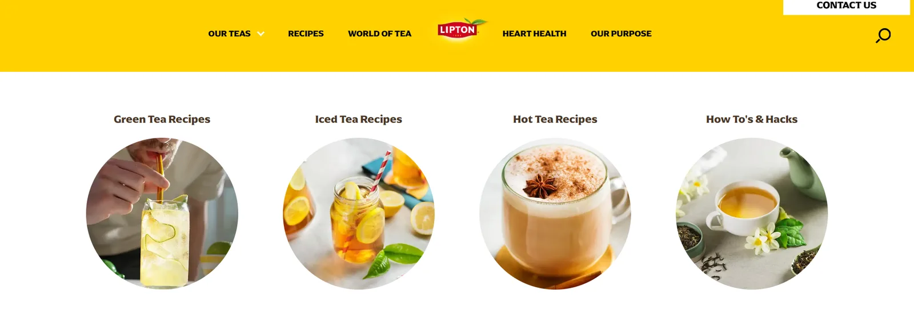
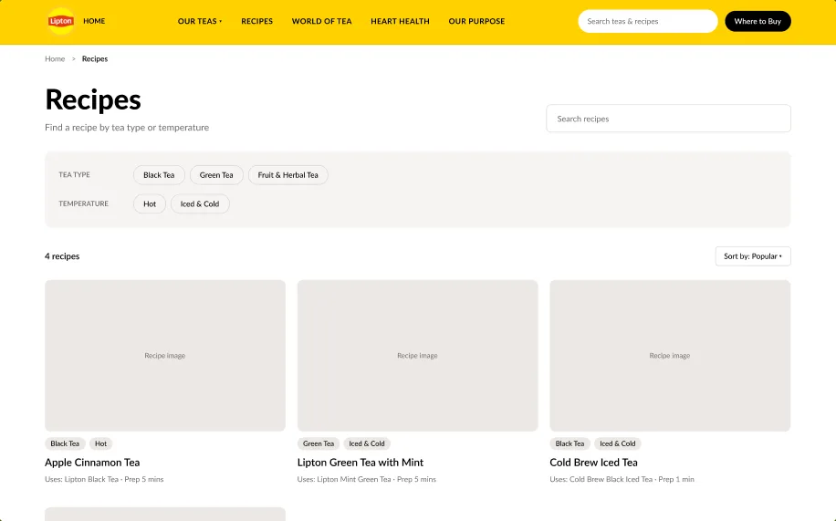
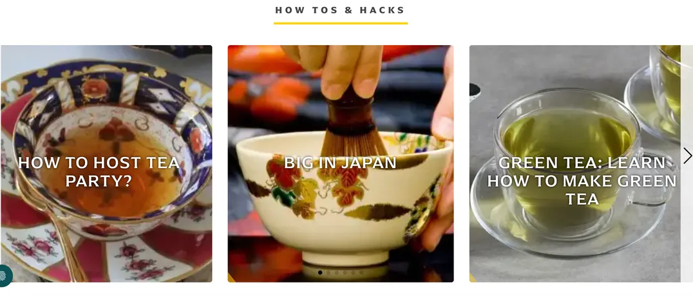
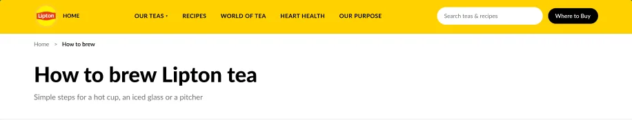
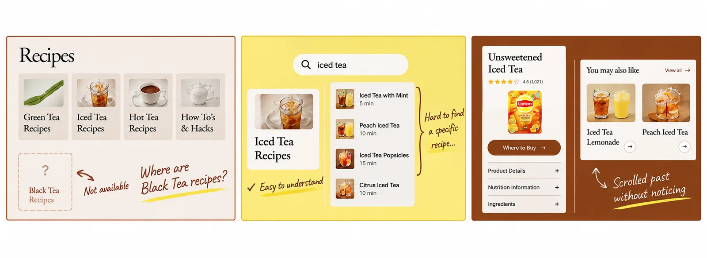
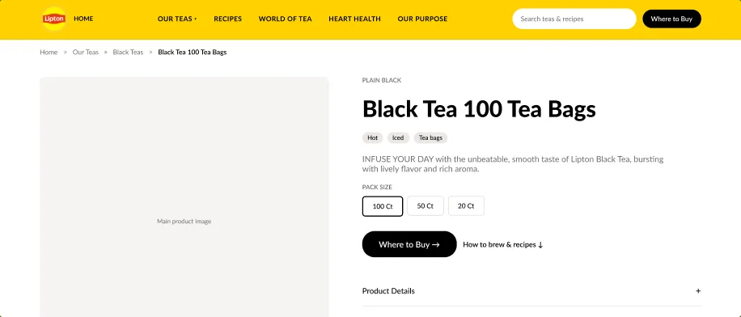
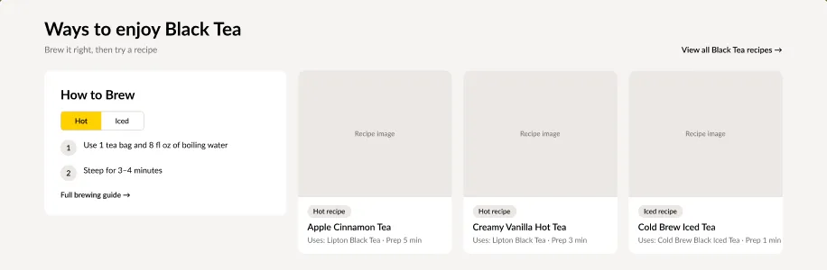
Recognition over recall: show the next step instead of making people remember where to look (Johnson, 2021).
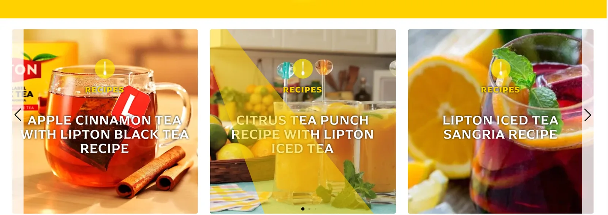
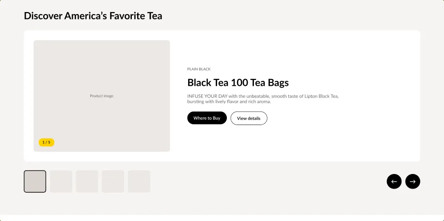
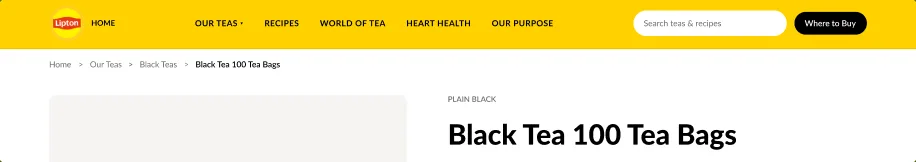
I re-ran every test on the prototype with participants who hadn't seen the original. Each row links to the full Lyssna results.
Samples are small (5–6 per Lyssna re-test, 3 per usability round), so these results are indicative. The tree-test answer key was re-scored for both rounds: preparation guides in other sections also count as correct. Participant 1's time was measured to finding the Where to Buy button.
The numbers and the testers' written feedback point to the same gap: the site still doesn't push people towards buying. Only 2 of 5 mentioned buying in the five-second test, and one participant saw Where to Buy but kept browsing.
Make the recipe labels simpler and more direct.
Give "How to brew" a higher place in the hierarchy.
The homepage doesn't really invite people to scroll down.
Show retailer names directly in Where to Buy.
Next: simplify recipe labels, move "How to brew" up, and make buying information more visible on the homepage and product page.
A website's problems can be very obvious or very easy to miss. Usability testing gives you a chance to see the site from other people's point of view. People use a website with different ways of thinking, and this often reveals many interesting problems.
Guiding users through a whole website is not as easy as it seems. Some people start scrolling straight away, while others go to the navigation bar first to find the fastest way to their goal. It is hard to know why people behave this way, but a clearer page that guides them is usually the better choice.
The way information is organised is very important. Poor categories can make an otherwise successful website useless: users get lost, confused, and cannot reach their goals. Tree testing can also reveal these hidden problems.
I used AI to organise, analyse, and calculate the data collected from user testing, assist in creating some of the prototypes in Figma, verify interactive functionality, and help with translation and language refinement.
References: Johnson, J. (2021). Designing with the mind in mind (3rd ed.). Morgan Kaufmann. · Krug, S. (2014). Don't make me think, revisited (3rd ed.). New Riders. · Nielsen, J. (2024). 10 usability heuristics for user interface design. Nielsen Norman Group.